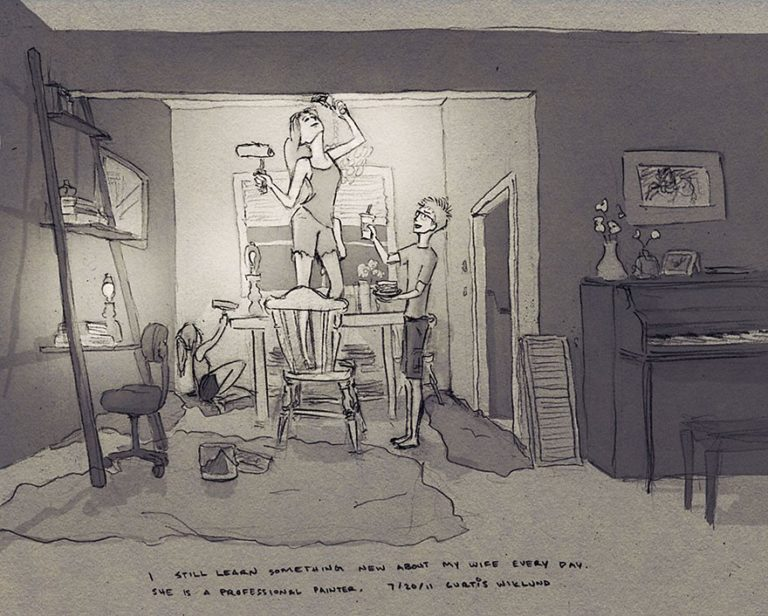

9. Constant Learning

player.hu
The time you both spend living together is a time that is sure to avail you with a deeper understanding of each other. You know that you’re really hooked when everything about them (both good and bad) makes you feel more in love with them.